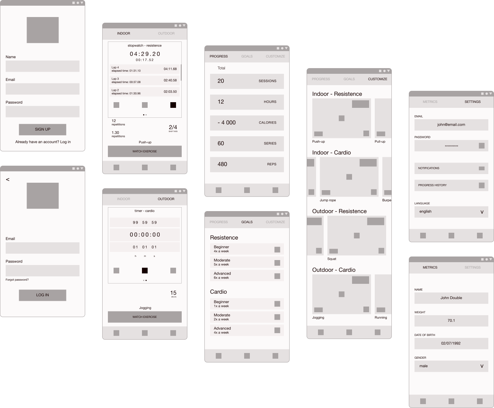

Fitness Trainer App
Helping young people to exercise with workout plans that can be performed anywhere.
research
problems
Simple way to maintain a healthy lifestyle
Lack of a personal trainer
The waisted time on commute
Overwhelming functionality in similar apps
goals
Dynamic workout routine skill-based
Workout plan generator
Ability to be performed anywhere
Simple and completely free of charge
personas
The user persona sums up the user research, contributing to making better decisions and gain more comprehensive knowledge about the final user.
“I want to workout anywhere and reach my goals”
John, 23 years old, college student
description
John knows he is too lazy to make his way to the gym every day but wants to get in better shape.
At the moment he doesn’t have much money to pay the gym membership because he is still a student.
Sometimes he does exercises that he watches on social media but feels like it is lacking a plan that he could follow to improve.
needs
- Gain lean muscle mass to feel more confident with his body
- A workout plan that shows him what to do to reach his objectives
- Simple historic to track his progress to keep him motivated
“I want to use my free time to keep myself healthy”
Maria, 25 years old, recently employed

description
Maria frequented gyms in the past but doesn’t like shared closed spaces to workout.
Besides that, she doesn’t have much free time, so save it in travels is something that would be really appreciated.
She also loves to exercise regularly because she feels like it keeps her mind and body healthy and energized.
needs
- Possibility to do indoor and outdoor workout
- Maintain her weight
- Notifications to never miss an exercise
information architecture
It is where I start thinking and organizing the relation between categories and user flow.
sitemap
The choice leans toward a flat site map to make it as simple as possible.
user flow
After signing up will be mandatory to define some information. That data will then be used to suggest workout plans and record the progress.
low-fidelity wireframes
Then, with the content partially defined, I started to sketch hypotheses. This allowed me to adjust and establish the information architecture and user flow, while also thinking about several layout aspects.
wireframes
After digitizing the sketches I could set everything in the right place with appropriate dimensions and design the intended behaviors with more emphasis.
design system
To keep the consistency I have defined the proprieties that were repeated on several screens and end up defining the app identity. The use of bold typography and red color is related to the idea of energy, power, and action.
logo design
Another important piece that completes the identity is the logo, which unifies all the parts.
prototypes
Lastly, using the design system and slight adjustments, the wireframes are transformed into prototypes.
Let’s start!
Create an account or just log in if you already have one.
Workout!
Chose between indoor or outdoor and cardio or resistance workout.
This is associated with the user’s plan.
If needed, watch how to do the exercise!
All about your plan.
Check your progress, set your goals, or customize your attributed plan!


About you.
Set up your metrics and change your settings.
what did i learn?
This was my first complete case study so, in general, I have learned a lot about the user interface.
I also learned that I should not limit myself when brainstorming. It is better to remove information than having to add it later. I must be as complete as possible.
User research is absolutely essential and I should have done more. It improves my process and goals and guarantees the improvement of the entire project.